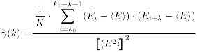

datapoints
datapoints ![$ (\tilde{\tau}_k, \tilde{g}_k, \tilde{\sigma}_k),\ \ k\in [k_0 .. k_1] $](./pic/form_169.png) selected by the user. First we define from these datapoints the residuals and weighted residuals . Then we can further note down these statistics (the weighted variants use
selected by the user. First we define from these datapoints the residuals and weighted residuals . Then we can further note down these statistics (the weighted variants use  instead of
instead of This plugin outputs a variety of fit statistics, that allow to
evaluate the goodnes of fit (GoF). All of these parameters are
calculated for the range of datapoints selected by the user. First we define from these datapoints the residuals and weighted residuals . Then we can further note down these statistics (the weighted variants use instead of
![\[ \chi^2 = \sum\limits_{k=k_0}^{k_1}\tilde{E}_k^2 \]](./pic/form_174.png)
![\[ \sqrt{\langle E^2\rangle}= \sqrt{ \frac{1}{K}\cdot\sum\limits_{k=k_0}^{k_1}\tilde{E}_{k}^2 - \frac{1}{K^2}\cdot\left[\sum\limits_{k=k_0}^{k_1}\tilde{E}_{k}\right]^2 }=\sqrt{ \left\langle\left[\tilde{E}_{k}-\langle E\rangle\right]^2\right\rangle} \]](./pic/form_176.png)
![\[ TSS = \langle g^2\rangle= K\cdot\sum\limits_{k=k_0}^{k_1}\tilde{g}_{k}^2 - \frac{1}{K}\cdot\left[\sum\limits_{k=k_0}^{k_1}\tilde{g}_{k}\right]^2 \]](./pic/form_177.png)

![\[ R^2=1-\frac{\mbox{RSS}}{\mbox{TSS}}=1-\frac{\chi^2}{\langle E^2\rangle} \]](./pic/form_181.png)
Finally also the residual correlation function  ,
i.e. the autocorrelation function of the index-ordered residuals is
calculated. This function gives hints on whether there are any
non-random structures in the fit values, which might not be visible in
the residuals plots:
,
i.e. the autocorrelation function of the index-ordered residuals is
calculated. This function gives hints on whether there are any
non-random structures in the fit values, which might not be visible in
the residuals plots:

The residuals are displayed together with their running average, where the average over the 10 surrounding values is calculated: